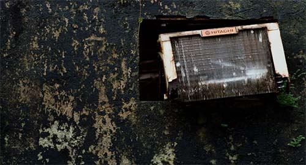
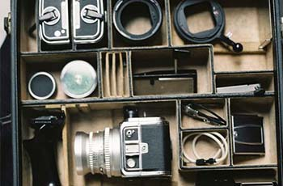
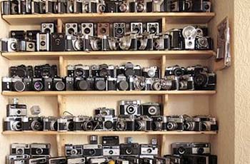
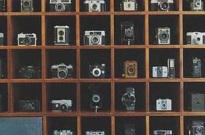

{kind=link}
{kind=link}
{kind=link}
{kind=link}
.jpg){kind=link}
.jpg){kind=link}
.jpg){kind=link}
.jpg){kind=link}
.jpg){kind=link}
- 25mm
- 50mm
- 80mm
- 105mm
- 微距
老鏡漫旅
尋找獨一無二的老鏡,
拍出屬於你的浪漫，
記錄人生每秒的永恆。
scroll
日式銀鹽
Nikon NIKKOR 50mm F1.2 Ai-S
NIKKOR 50mm F1.2是Nikon 50mm標準定焦鏡
頭中最銳利的鏡頭, 光圈全開f/1.2即是可用光圈,
光圈收在f/2時解像力達到最高, 銳利度銳到無敵.
本鏡頭為Ai-S版本, 最特別的是擁有的光圈葉片數
量是9片, 比其他版本只有7片光圈葉片數, Ai-S版
本能拍攝出非常更吸引人的18道星芒及光圈散景.
拍攝的成像細節絲毫不馬虎, 銳利度的強勁表露無
遺, 層次分明, 空間感十足. 大光圈f/1.2散景非常
出色, 獨特的迷霧散景風味, 看過就很難忘懷.

西式重烘
Contax Carl Zeiss T Planar 85mm F1.4 AEG
經典的85mm人像鏡，很有自己獨特鮮明的風格，光圈全開跟收至2.8、5.6後的表現幾乎是三顆不一樣的鏡頭，總是帶給你滿滿的驚喜，也因為這樣曾被人譽為「和偶像結婚後的生活」。
了解更多-
微距特調
HELIOS 44-2 58mm F2
helios-44-2前蘇聯產，仿照蔡司小B的結構，光圈前置，八個光圈葉片，被攝影愛好者稱爲八羽怪，在一定的背景條件下（如果灌木，樹從等等），焦外可以旋轉。很有可玩性！收藏，使用均是佳品。
了解更多
Recommend Shop
合作夥伴們
-

老鏡新生|新北汐止
聽......是悅耳的機械快門交響樂!
如果可以我想把我所有的錢，全部拿來買鏡頭，余老闆自豪地說道，一日老鏡人，終生老鏡人。 他發願只要跟他一樣是同道中人，一定給他最優惠的價格，只要你敢開口，余老闆就敢賣。
-

機械邊城|新北汐止
開業20餘年，只為分享最美的瞬間。
陳老闆最喜歡跟他的顧客談天，只要扯到他最愛的萊卡鏡頭，他就能說上個一下午不停歇，客人常常說他是最愛聊天的老闆。 但老闆表示誤會他了，他沉默寡言，一定是客人認錯人了!
-

史萊姆的第二個窩|新北汐止
因機械鏡頭負債,也因鏡頭廣結良緣。
要買老鏡就非得提到，人稱老許的許董，從稀有的萬倫沙鏡頭初版，到最新的索尼自動對焦廣角鏡頭，許董應有盡有，但他老人家有時候忘記出貨，這又是另一個故事了。。。。。。
老鏡漫旅
-
攝影師兼模特兒， 最喜歡在初夏及入冬時拍照，因為光線最多變化，喜歡日式風格的冷光潔白感!
Ruby
-
原本是會計師的他，因為喜歡記錄生活，不小心誤入歧途，月底收帳單時都不敢回家，喜歡微距的細節。

LEO
-
旅居世界的外國人， leica合作攝影師，最喜歡用機械鏡頭拍攝。喜歡在午後喝杯小酒後開始修圖!
Allen